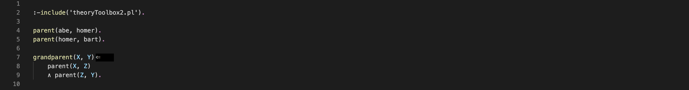
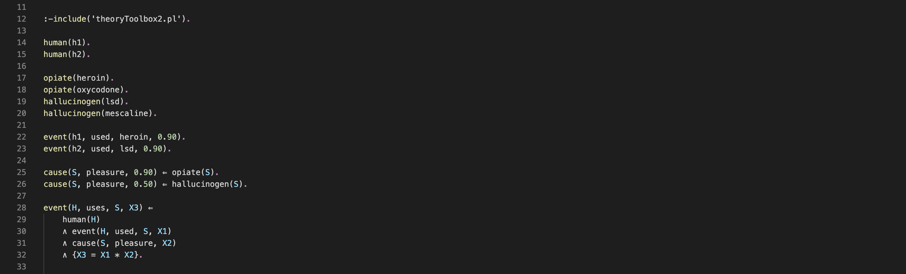
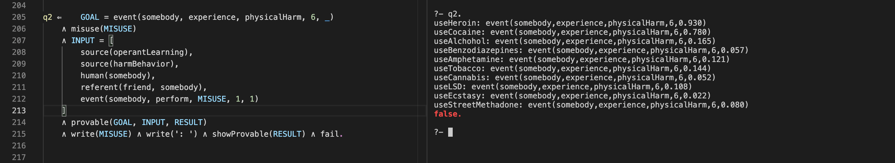
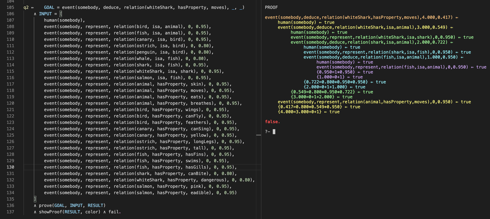
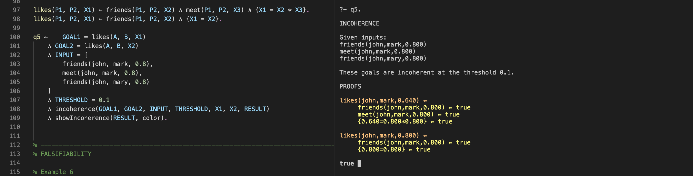

Wellcome! Here you will find information about logic programming for theory representation and scientific inference in psychology, including the written documentation for Theory Toolbox 2. Check out the video below or the abstract to get an introduction!
Build Explicit and Expressive Theories in First Order Predicate Logic
A logic program can represent both the qualitative and quantitative components of a theory in
first order predicate logic, one of the most powerful formal languages. Such a representation
includes any background assumptions, the meaning of events, and how events are qualitatively and
quantitatively related. In fact, any currently known computation can be expressed in a
logic program (we use Prolog which is Turing complete).
Use Theories to Deduce Conclusions and Explain These Conclusions as Proofs
From a theory program it is possible to use an algorithm to derive valid conclusions, i.e. conclusions
that have to be true if the premises in the theory are true. Such conclusions come in the form of
semantic information and/or quantitative information. Theory Toolbox 2 also explains why a certain
conclusions is entailed by a theory by showing all the inferential steps that lead up to the conclusion,
including any steps that involve numerical computations.
Find Unique or Symbolic Solutions to the Equations in a Theory
When the system of equations in a theory has a unique solution, this solution is shown in any conclusions and proofs
that are derived from the theory. In case there are multiple unknowns, it is also possible to perform a search for a
unique solution that miximizes or minimizes a certain variable. And if there are no unique solutions at all,
Theory Toolbox 2 shows a proof with a symbolic solution.
Use Rational Criteria to Evaluate Theories and Compare Them to Other Theories
Using rational criteria for theory evaluation is an important part of theory evaluation, in addition to data collection and analysis.
With Theory Toolbox 2 it is possible to check whether a theory is internally coherent (not self contradictory),
measure how general it is (how falsifiable it is) and check whether it subsumes another theory (it contains everything that
another theory contains).
Below you can find a written guide to logic programming, theory representation and inference with Theory Toolbox. Rohner and Kjellerstrand (2021) contains a theoretical discussion of theory representation in psychology; this web page contains the documentation for Theory Toolbox 2.
1. Overview
- Section 2 explains how to install SWI Prolog and Theory Toolbox 2, and how to run some examples.
- Section 3 gives a quick introduction to logic programming.
- Section 4 explains some basic principles for designing scientific theories.
- Section 5 discusses the advantages of logic programming with respect to theory representation.
- Section 6 shows how to use Theory Toolbox 2 for inference, explanation and theory evaluation.
2. Installation and Setup
To run Theory Toolbox 2 you need SWI Prolog (Wielemaker et al., 2011). The sections below explain all the steps necessary to get up an running.
2.1. Installation
It is possible to run SWI-Prolog from Terminal on Mac or the command line in Windows. However, using Visual Studio Code is very handy: It has built in GitHub support and you can define user snippets for different logical symbols. To setup everything to work with Visual Studio Code follow these steps:
- Download and install SWI Prolog.
- Download and install Visual Studio Code.
-
Install the VSC Prolog extension
- Start Visual Studio Code and click the extensions symbol in the side bar on the far left (the symbol with four squares).
- Search for the VSC Prolog extension and install it.
- Download the Theory Toolbox 2 repository
- Using your web browser navigate to the theory-toolbox-2 repository.
- Click the green Code button and chose Download ZIP
- Unpack the folder somewhere on you hard drive
- In Visual Studio Code, click the File menu, choose Open Folder, and open the theory-toolbox-2 folder.
- Load an example
- In the folder structure to the left double click an example, e.g. substanceMisuseExample.pl.
-
Click the menu View and chose Command Palette... Type
prolog load document and hit return. Now a terminal should appear.
- Run some example queries
-
Now you should be able to run a query. Next to
?- type the name of a query, such asq3 , followed by a period and hit return.
-
Now you should be able to run a query. Next to
2.2. Using Theory Toolbox 2 on Your own Theory
To use the toolbox on your own theory
- Create a text file (UTF-8 with BOM encoding) and write the following at
the top of this file:
:-include('theoryToolbox2.pl'). Your file has to be in the same directory as theoryToolbox2.pl (alternatively you can modify the include directory to point to another directory that contains theoryToolbox2.pl). - Open the file in Visual Studio Code and run a query (as described under 6 above).
The include directive
- Enables the use of clpr predicates (explained below).
- Enables the use of symbols from classic logic:
∧ ,∨ ,⇐ ,¬ (in theoryToolbox2.pl these are defined as operators and term_expansion/2 and goal_expansion/2 are used to replace them with standard Prolog operators). - Enables the following Theory Toolbox 2 predicates: provable/3, prove/3, maxValue/4, minValue/4, incoherence/7, falsifiability/3, subsumes/5 (the number indicates the number of arguments in the predicate).
3. Syntax and Semantics of Logic Programs
3.1. Atomic Formulas
The basic building blocks of a logic program are atomic formulas; these describe properties and relations that involve singular objects or sets of objects.
Syntactically an atomic formula consists of a predicate name, written with an initial lower case letter,
directly followed by a comma delimited list of arguments in parentheses. Some examples of atomic formulas are
Each argument in an atomic formula is a term. A term either a constant, a variable or a function.
-
A constant denotes a single object; it is written as a string that starts with a lower case
letter or as a number, e.g.
bart ,cocaine or3.14 . -
A variable denotes a set of objects; it is written as a string that starts with an uppercase letter,
e.g.
X ,H1 , orHuman . -
A function denotes a relation; it consists of a function name directly followed by a comma delimited list of
arguments in parentheses. Each argument is a term. In the atomic formula
event(H1, believe, event(H2, like, H1)) , the partevent(H2, like, H1) is a function for example.
A special kind of atomic formula is a numerical constraint. It consists of an equation written in curly braces (per the clpr module). Some examples of legal constraints are:
{X = 1 + 1} , meaning X equals one plus one.{X = Z * (1 - Y)} , meaning X equals Z times one minus Y.{X =< Y} , meaning X is less than or equal to Y.{X = Y^3} , meaning X equals Y to the power of 3.{X = 4^0.5) , meaning X equals the square root of 4.{X = abs(Y - Z), Y > 3} , meaning X equals the absolute value of Y minus Z, and that Y is greater than 3.
3.2. Definite clauses
A theory program is made up of a set of definite clauses, each ending with a period. A definite clause is an implication with a single non-negated
atomic formula in the consequent, and zero or more atomic formulas or numerical constraints in the antecedent.
Schematically,
Figure 1. A Toy Program with Three Clauses

In the antecedent of a clause, atomic formulas and constraints can be combined with conjunction (
Clauses with a non empty antecedent usually contain variables, and they therefore describe general relations.
For example,
Consider another example that mixes qualitative and quantitative relations, shown in Figure 2. In the example we use an event predicate with a subject, a verb, an object and a probability value. In addition to stating that h1 is a human, that heroin is an opiate and so on, it also says that, among other things, h1 used heroin with a probability of 0.90 and that an opiate causes pleasure with probability 0.90. The last clause has the following meaning. For all H, S, X1, X2, X3, it is provable that H uses S with probability X3 if all of the following conditions hold: H is a human, H used S with probability X1, S causes pleasure with probability X2, X3 is equal to the product between X1 and X2.
Figure 2. A Toy Program that Mixes Qualitative and Quantitative Relations

Before ending this section something needs to be said about the relation between Theory Toolbox 2 and Prolog. Readers who are familiar with
Prolog might have noted that our examples do not use standard Prolog syntax (in which comma is used for conjunction and
4. Design Principles for Scientific Theories
With this background, we can now discuss some general design principles for building actual theory programs. The text below is a brief summary of some of the principles discussed in Rohner and Kjellerstrand (2021).
- A scientific theory consists of a set of definite clauses that contain a qualitative and quantitative description of events, relations between events, including any background assumptions on which these relations depend. Every component of a theory a definite clause. Consider the main clauses in the emotion theory. Note, for example, that each emotion is described as an implication, in which the consequent (the probability of the emotion) depends on a set of necessary and sufficient conditions in the antecedent.
- The clauses in a theory can usually be grouped into background clauses and main clauses. Background clauses represent the background assumptions of a theory. Main clauses represent the main relations of a theory. Consider the emotion theory again. The main parts of the theory are the clauses that describe each one of the five emotions; accordingly, these clauses are listed under main clauses. The other clauses, e.g. about what kinds of things people value, which events are congruent with a certain goal, and so on, are background assumptions, so these are listed under background clauses.
- The constructs (concepts) in a theory can be represented by a five argument event atom. Its components are a subject, a verb, an object, a time frame, and a probability value (but any number of additional arguments, such as a place argument, can be added if relevant). By doing so a theory program represents the meaning of constructs. Moreover any argument can be a constant, a variable or a function. The emotion theory, for example, contains several such event atoms. Note also that a function is used as the object argument in each emotion clause to distinguish between appraisal and what is appraised. In fear, for example, appraisal is about a future goal incongruent event.
- In addition to the usual symbols of logic, the relations of a theory can be described with a set of equations that relate the probabilities (or other magnitudes) of different events. So in the emotion theory, to take an example, the probability of an emotion depends on the probabilities of different appraisal patterns (see the main clauses of the theory).
- In the clauses of a theory, the domains of all variables should be defined. This explicitly states the objects that the theory is about, in terms of a set of necessary and sufficient conditions. For example, in the main clauses of the emotion theory, H1, H2, E and G and so on, are defined to be humans, events, and goals, respectively.
5. Advantages of Logic Programming
This section briefly describes some of the advantages of logic programming. An in depth discussion of these advantages can be found in Rohner and Kjellerstrand (2021).
-
Explicit Background Assumptions. Because first order logic can represent almost any kind of relation,
it is possible to build a detailed formalization of the background assumptions in a theory. Any prediction
C from a theory is then entailed by its main clausesM and its background clausesB ; schematicallyM ∧ B ⊨ C . So if states of affairs are at odds withC , the blame has to fall on eitherM orB , or bothM andB . When (informally) deducing empirical predictions from a natural language representation, in contrast, there is a higher risk that we unwittingly presuppose one or moreB s that were never in the theory. So a test of such a prediction becomes ambiguous: If aB wasn't in the theory, an empirical test that assumed thisB is not a test of the theory. - A Representation of both the Qualitative and Quantitative Parts of a Theory. By using predicates, such as the event predicate, in addition to the usual symbols of logic, is is possible to capture important qualitative information that is usually expressed in natural language. And the possibility to nest an arbitrary number of functions in an atomic formula, increases this expressive power even further. Such qualitative information can be combined with any number of equations that relate probabilities or other quantities. Note also that when the semantic content of events is decomposed into subject, verb, object, time and value arguments, is is possible to represent some important relations between the intra event components of different events in a clause.
- Universal Statements About Well Defined Domains. Scientific theories consist of a set of universal statements that describe relations between all events of a certain kind; i.e. they are nomothetic descriptions (Popper, 1972). A powerful feature of first order logic is that is is possible to say that a certain relation holds for all objects in one or more sets and to provide detailed definitions of these sets. This is achieved by using variables and by writing any domain definitions in the antecedent of a clause.
- Modularity. Another powerful feature of logic programs is that they are modular representations, meaning that: (1) It is possible to add any number of components to a theory without modifying the components that already exist in the theory. (2) Adding components to a theory will usually make the theory entail more inforrmation than just the information contained in the added components.
-
Validity. When a theory is represented in a logic program it is possible to use resolution to derive valid conclusions from it.
A valid conclusion is a conclusion that has to be true if the information in the program is true. Schematically,
M ∧ B ⊨ C , whereM is the set of main clauses,B the set of background clauses, andC the conclusion. So when a theory is a good one one, it can be used to generate accurate predictions and explanations. It goes without saying that this function is relevant whenever a scientific theory is used in an applied setting. And when a theory is pitted against empirical data, finding notC must necessarily mean that eitherM orB , or bothM andB are wrong. - Rational Theory Evaluation. Because theory programs are formal representations, it is possible to hand them to algorithms that perform basic sanity checks, already before empirical testing. For example, Theory Toolbox has predicates that ckeck whether a theory is internally coherent, how general it is, and if it subsumes one or more other theories.
- Collaboration. Theory programs can be uploaded to an online software hosting and version control platform such as GitHub. This has the following advantages: (1) Members of a reasearch team can suggest and make changes to the theory online; (2) It is easy to keep track of any changes to the theory; (3) members of the team instantly have the latest version of the theory available on their computer (the local version of the theory is synchronized to the online one); (4) members of the team can instantly run queries on the latest version of the theory (e.g. using Theory Toolbox 2).
6. Using Theory Toolbox 2
This section is an introductory users guide to the predicates in Theory Toolbox 2. It starts with a general discussion of proof search and then describes each predicate in Theory Toolbox 2.
A common feature of the predicates in Theory Toolbox 2 is that they all, in some way or another,
deal with the conclusions that are entailed by a theory program. The search for such conclusions starts
with a query goal, an atomic formula which may or may not contain variables. If the goal only contains
constants, the output is
So in what cases exactly is a goal provable? In other words, in what cases does a theory program entail a goal?
Before explaining this, a basic understanding of unification is necessary, because unification is
an essential part of proof search. Unification is about determining if two formulas match or not;
syntactically unification is indicated by the equality sign
- Two constants unify if they are the same
- A variable unifies with any kind of term and is instantiated to that term
- Two atomic formulas, or functions, unify if all of these conditions hold:
- They have the same name
- They have the same number of arguments
- All of their arguments unify
- Their variables can be instantiated consistently
And now we finally get to the conditions for when a goal is provable (without going into technical details). A goal is provable in each one of the following cases:
- The goal is true, e.g. as in
{4 = 2 + 2} , or{X = 2 + 3, X > 1} - The goal unifies with the consequent of a clause that has an empty antecedent
- The goal unifies with the consequent of a clause whose antecedent is provable
- The goal unifies with a term in INPUT
6.1. The INPUT argument
All of the predicates in Theory Toolbox 2 have an argument called INPUT. INPUT is used to temporarily assert anything that is
considered provable in addition to the information in a theory program. Because theories should only contain
general statements, they are not supposed to be filled will all the particular instances to which they may be applied.
For example, a theory about kinship, should not contain clauses about Homer being the parent of Bart and so on (see Figure 1).
Such information should be provided in INPUT instead. The theory, per se, should only contain general statements like
Note that all theory examples contain a commented section INPUT. This is a declaration of what atoms that have to be provided in INPUT in order for all the consequents of a theory to be provable. Providing such a section is not necessary but it is a favour to any third parties that wish to use a theory. Practical examples in which INPUT is used follow below.
6.2. provable/3
GOAL should be an atomic formula with constants, variables or functions as arguments.INPUT should be a list of zero or more atomic formulas.
Figure 3 shows two queries with provable/3 and the associated output predicate showProvable/1. The underscores in the goal are anonymous variables.
Using an anonymous variable for an argument in the goal is equivalent to saying "Whatever the theory entails for this argument and predicate.".
Note, for example, that
Figure 3. provable/3 Used on a Toy Example
Figure 4 shows a query on the
substance misuse example. The query goal means "the probability that somebody experiences harm at time 6"
(value was the last argument in event). The line
The output shows different probabilities of experiencing physical harm. Note that some substances cause more harm at time 6 even if they have lower harm values in the background clauses of the theory; this is because some substances cause more pleasure than others (increasing the likelihood of misuse, and therefore harm).
Figure 4. provable/3 Used on the Substance Misuse Example

Examples in which provable/3 is used are:
- tutorialExamples.pl
- substanceMisuseExampleState.pl
- collinsQuillianExample.pl
- planningExample.pl
- substanceMisuseExample.pl
- phobiaExample.pl
6.3. prove/3
GOAL should be an atomic formula with constants, variables or functions as arguments.INPUT should be a list of zero or more atomic formulas.
OPTION should be one of the following:monochrome ,color ,lanes .
Note: In case the system of equations in a theory doesn't have a unique solution, prove/3 returns a symbolic solution with all the computations that lead up to the goal.
Figure 5 shows a query with prove/3 and its output predicate showProof/2. In the query note that, as in previous examples,
underscores (anonymous variables) are used to get "whatever the theory entails for this argument and predicate", and that the particular objects to which the theory
is applied are put in
Figure 5. prove/3 Used on a Toy Example
Figure 6 shows a query with prove/3 on the collinsQuillian example. The goal means "somebody can deduce that a white shark moves in some time frame and with some probability"; by using anonymous variables (underscores) for these arguments we leave it up to prove to find whatever constants the theory entails for this relation.
Figure 6. prove/3 Used on the Collins and Quillian Example

Examples in which prove/3 is used are:
- tutorialExamples.pl
- collinsQuillianExample.pl
- substanceMisuseExample.pl
- substanceMisuseExampleState.pl
- planningExample.pl
- naturalSelectionExample.pl
6.4. maxValue/4 and minValue/4
GOAL should be an atomic formula with constants, variables or functions as arguments, where the argumentX is a numerical variable.INPUT should be a list of zero or more atomic formulas.
OPTION should be one of the following:monochrome ,color ,lanes .
Figure 7 shows maxValue/4 applied to a toy example. In the theory (to the left) note that we assign a set of alternative values to
exogenous numerical variables; i.e. numerical variables that do not appear as dependents in any theory equation. This means that the numerical
variable associated with profit (
The output shows a proof for the goal, such that the
Figure 7. maxValue/4 Used on a Toy Example
Figure 8 shows an example in which maxValue/4 is applied to
substanceMisuseExample.pl. The goal corresponds to "somebody eats unhealthy at time 6 with probability X".
In addition to the other prerequisites for the theory (defined in it's INPUT section),
In the output, the proof contains the values of exogenous variables that maximise the value argument of the goal; these values then propagate in the systems of equations that lead up to the numerical value in the goal.
Figure 8. maxValue/4 used on the Substance Misuse Example

Examples in which maxValue/4 and minValue/4 are used are:
- tutorialExamples.pl
- emotionExample.pl
- substanceMisuseExample.pl
- sourceMonitoringExample.pl
- neuropharmacologyExample.pl
6.5. incoherence/7
GOAL1 andGOAL2 should be atomic formulas that each contain a numerical variable; for exampleX1 andX2 , respectively.INPUT should be a list of zero or more atomic formulas.THRESHOLD should be a number (integer or real).X1 andX2 are the numerical variables inGOAL1 andGOAL2 .
OPTION should be one of the following:monochrome ,color ,lanes .
Figure 9 shows a toy example with incoherence/7. Note that
Figure 9. incoherence/7 Used on a Toy Example

Figure 10 shows incoherence/7 applied to
phobiaExample.pl. Note that in
Figure 10. incoherence/7 Used on the Phobia Example
Examples in which incoherence/7 is used are:
6.6 falsifiability/3
GOAL should be an atomic formula with constants, variables or functions as arguments.INPUT should be a list of zero or more atomic formulas.
Consider Figure 11 which shows a toy exaple involving falsifiability/3. In the example there are two subtheories: subTheoryA and subTheoryB.
The second one is more general because a parent is defined as either a mother or a father. Note that in
Figure 11. falsifiability/3 Used on a Toy Example
A realistic example is shown in Figure 12, which is based on
distanceExample.pl.
The goal means "somebody can deduce that some object is beyond some other object at some time with some probability".
This theory has a recursive part and a non recursive part. In
Figure 12. falsifiability/3 Used on the Distance Example
Examples in which falsifiability/3 is used are:
6.7. subsumes/5
GOAL should be an atomic formula with constants, variables or functions as arguments.SUPERTHEORY andSUBTHEORY should be atomic formulas.INPUT should be a list of zero or more atomic formulas.
Figure 13 shows a toy example in which subsumes/5 is used. The goal means "the objects for which the anchestor relation can be deduced". Theory B subsumes theory A because in theory B, an ancestor is either somebody's parent or somebody's grandparent.
Figure 13. subsumes/5 Used on a Toy Example

A realistic example is shown in Figure 14, which is based on
distanceExample.pl.
The goal corresponds to "somebody can deduce that some object is beyond some other object at some time with some probability".
The clauses of this theory either contain an atom
Figure 14. subsumes/5 Used on the Distance Example
Examples in which subsumes/5 is used are:
References
- Bratko, I. (2001). Prolog programming for artificial intelligence. Pearson education.
- Popper, K. R. (1972). The logic of scientific discovery. Hutchinson.
- Rohner, J. C. & Kjellerstrand, H. (2021). Using logic programming for theory representation and inference. New Ideas in Psychology, 6, 100838.
- Wielemaker, J., Schrijvers, T., Triska, M., & Lager, T. (2010). Swi-prolog. arXiv preprint arXiv:1011.5332.